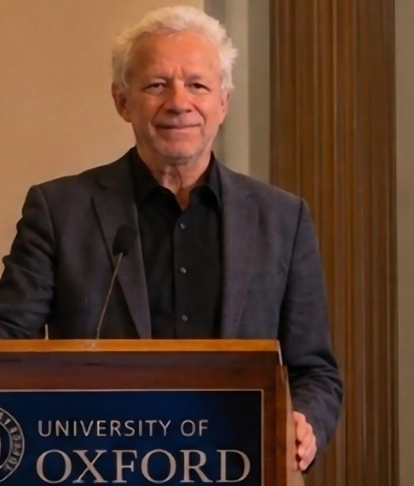
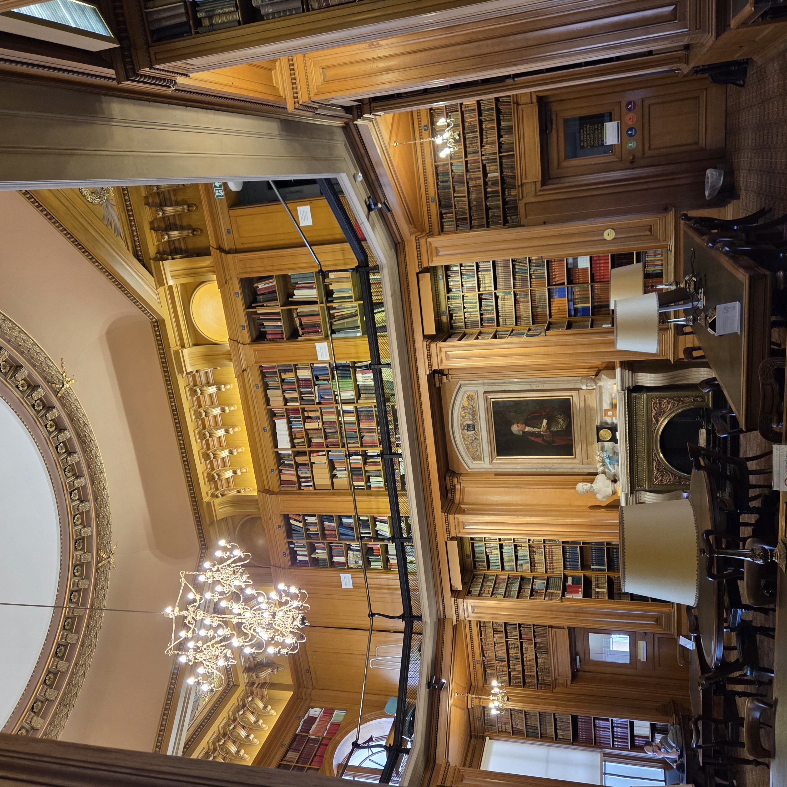
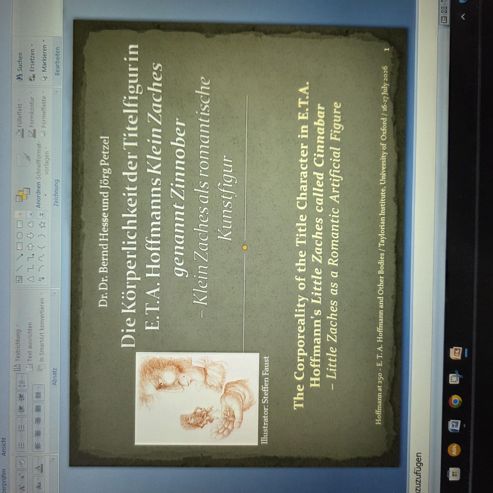
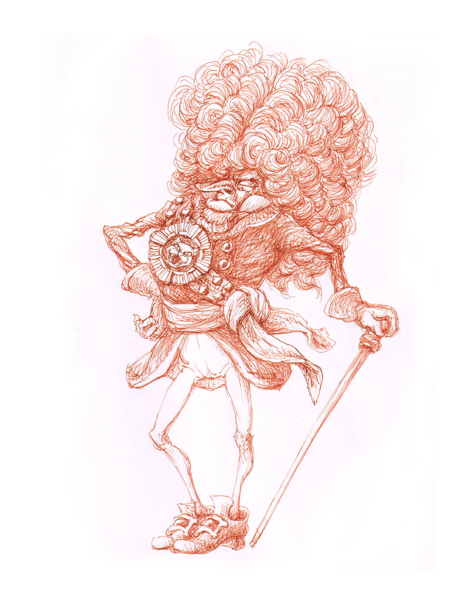
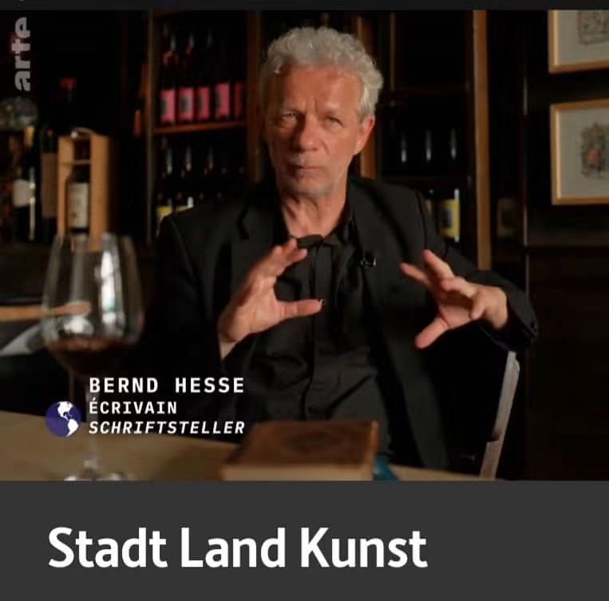
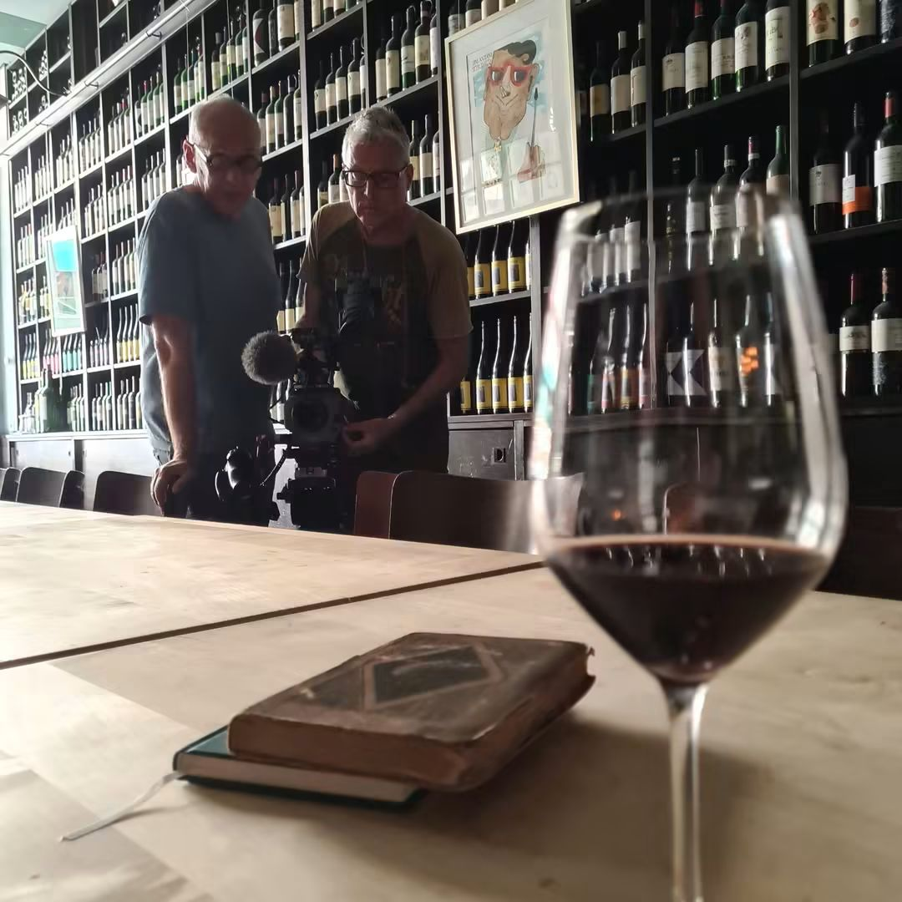
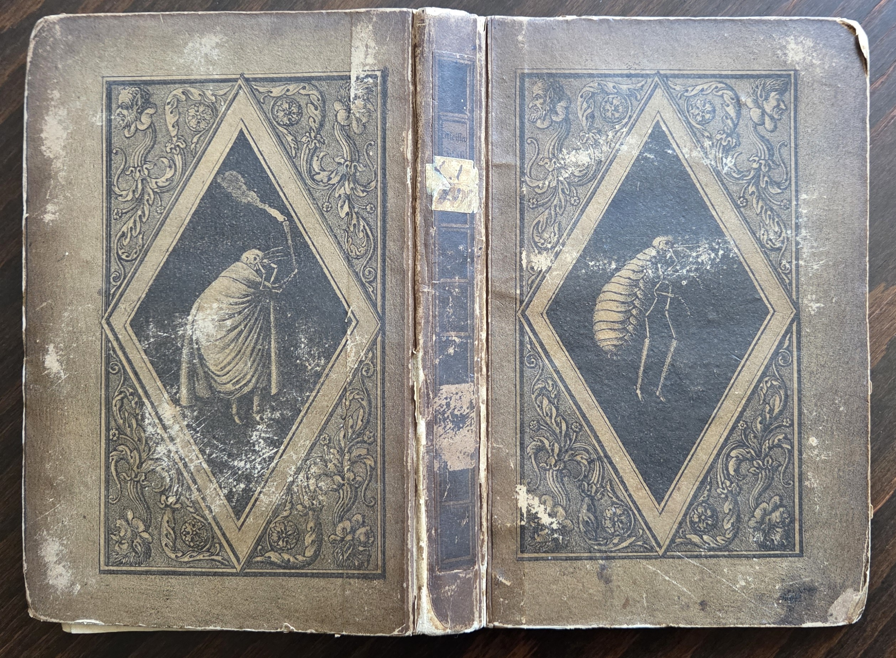
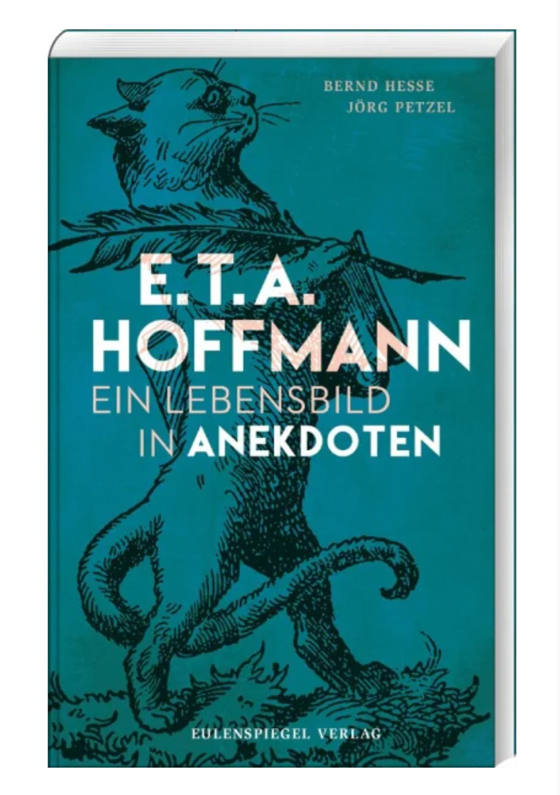
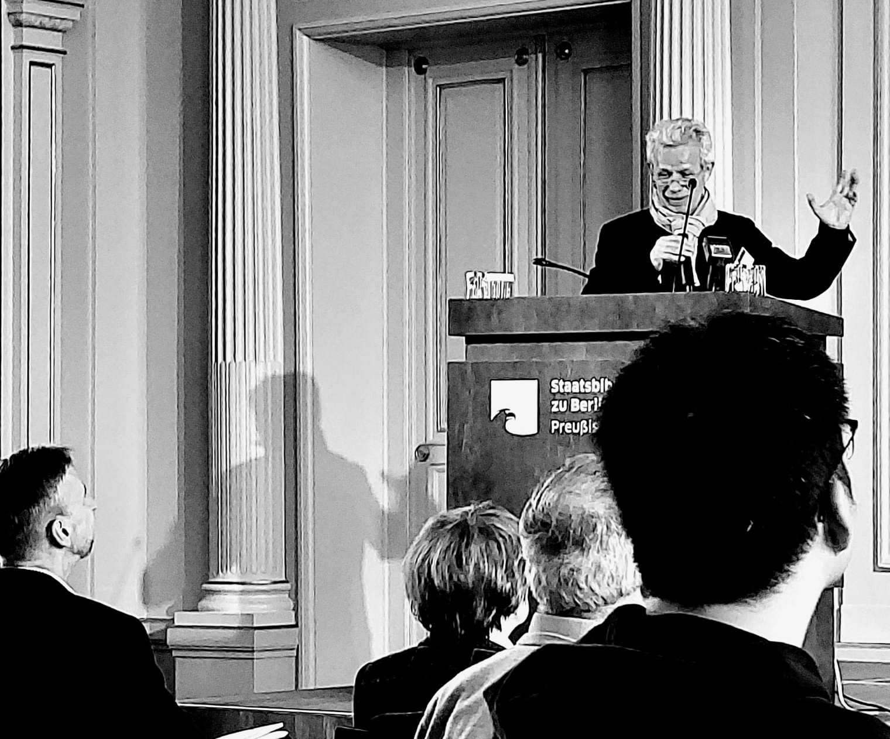
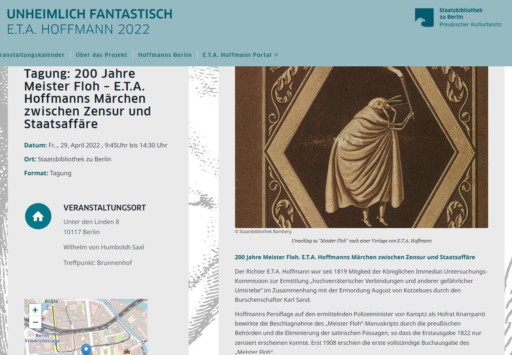

Vortrag an der University of Oxford
Im Juli 2026 hielten Dr. Dr. Bernd Hesse und Jörg Petzel im Rahmen der internationalen Tagung Hoffmann at 250 – E. T. A. Hoffmann and Other Bodies am Taylorian Institute der University of Oxford einen Vortrag zur Körperlichkeit der Titelfigur in E. T. A. Hoffmanns Klein Zaches genannt Zinnober. Der vollständige Titel des Vortrages lautete Die Körperlichkeit der Titelfigur in E. T. A. Hoffmanns „Klein Zaches genannt Zinnober“ – Klein Zaches als romantische Kunstfigur. Speziell für diesen Vortrag schuf der Berliner Illustrator Steffen Faust Zeichnungen zu Klein Zaches, die in die Präsentation einbezogen wurden.




E. T. A. Hoffmanns fantastisches Berlin
In der ARTE-Dokumentation E. T. A. Hoffmanns fantastisches Berlin aus der Reihe Stadt, Land, Kunst durfte ich zu E. T. A. Hoffmanns Zeit in Berlin berichten, wozu ich auch meine Erstausgabe von Meister Floh zur Hand nahm und aus dem mit Jörg Petzel geschriebenen Buch E. T. A. Hoffmann – Ein Lebensbild in Anekdoten las.




Vortrag bei der E. T. A. Hoffmann-Tagung „200 Jahre Meister Floh“
Am 29. April 2022 fand in der Staatsbibliothek zu Berlin die Tagung 200 Jahre Meister Floh – E. T. A. Hoffmanns Märchen zwischen Zensur und Staatsaffäre statt. Dr. Dr. Bernd Hesse hielt dort den Vortrag Eine Staatsaffäre – E. T. A. Hoffmann als Richter und Dichter im Kampf mit der preußischen Ministerialbürokratie.

